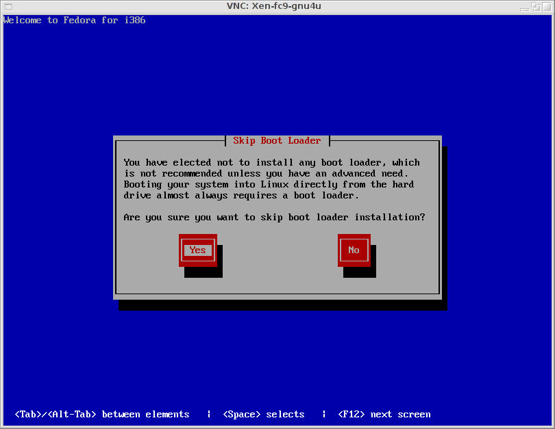
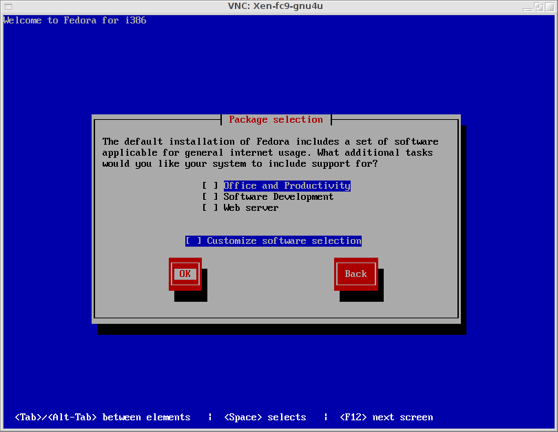

Howto setup init4boot with Fedora Core 9
Overview
This howto describes how to setup a Fedora Core 9 using init4boot initramfs.
The aim is, to get a ready to use Fedora Core 9 system that boots from iSCSI. This setup assumes, that the new system will run as a guest system under Xen.
Preparation
Before starting, the following things must be available:
- Fedora Core 9 DVD as image file.
- An additional guest system or another (bare metal) system running a NFS server.
- Some disk storage on an iSCSI storage system. This might be some special hardware device or a Linux box running an iSCSI target. It is out of scope how to create such a disk - please consult the manual pages comming with your system.
Put the DVD image to the additional computer where an NFS server is running. Loop-mount it and export it via NFS. Note: pick a short name for the path - you'll have to type this some times...
Create a directory on the Xen box (inside the dom0), and put the following files into this directory:
- fc9-install.sxp: Xen configuration file - this must be adapted to your needs.
- vmlinuz: grab this from the Fedora image from [mountpoint]/images/xen/vmlinuz
- initrd.img: grab this from the Fedora image from [mountpoint]/images/xen/initrd.img
Startup the guest system:
xm create -c fc9-install.sxp
Start up a vnc viewer and connect to the freshly generated guest system: the IP address is the one from the host system, the port is somewhat random starting at 5900. (So if port 5900 is used by another server, increase the port number by 1 and try again, and again...)
Basic Installation
The installation is mostly the same as any other Fedora installation - just follow the instructions - and stop at the right point:
Press OK here and proceed to the next page, where you have to enter the root password. Enter the root password, but do not press OK.
iSCSI Setup
Instead of pressing OK, press ALT-Crsr-Rigth to switch to another terminal - which gives you the shell and the control.
(The standard Fedora iSCSI setup seems broken - and is not very flexible. It is, e.g. not possible to use username / password for authentication or discovery.)
Setup of initiatorname
To set the initiatorname, create the corresponding directory and edit the initiatorname.iscsi file:
iscsid Configuration and Startup
If you want, you can now setup the configuration for iscsid. This is needed, if some non standard configuration must be used, e.g. usernames and passwords. Please have a look at the iscsid documentation how to specify the parameters.
iSCSI target discovery
To discover the iSCSI disk(s), use the following command:
iscsiadm -m discovery -t sendtargets -p [iSCSI-Filer-IP]:[iSCSIFiler-Port]
Typically the iSCSIFiler-Port is the standard iSCSI Port: 3260.
The command returns the port (up to the first space; Note: the ',1' (or ',N') is part of the port) and the target (rest of the line).
iSCSI target login
To login into the detected targets, use the following command:
iscsiadm -m node -T [target] -p [port] -l
where target and port are the values from the discovery command.
To check the success (or failure), you can switch with ALT-Crsr-Right to some log console:
Now switch back to the first console (with Alt-Crsr-Left) where you entered the root password.
Finish Installation
Continue the installation. The iSCSI disk will be used now as if this were a normal local disk.
In this example, a custom disk layout way chosen - only one partition without any swap.
No boot loader is needed for this setup - initramfs and kernel are stored on the dom0.
Chose the packages you want to install. (Note that iscsi initiator must be installed. This can be done now (easy way) or later.
Post Installation
Grab the latest init4boot initramfs from the Download page.
Grab the current system kernel from Fedora Core 9 (use another installation or the kernel package.
Put both files into a new directory. Additional you must put a < href="fedora_guest_setup/fc9-gnu4u.sxp">Xen configuration file into this directory - and adapt it to your needs.
System Adaptions
Some adaptions must be done to the new system. These must be done in single user mode. So prepend an uppercase 'S' to the extra line in the configuration file: extra="S console=..." and boot up: xm create -c fc9-gnu4u.sxp.
init.d iscsid script
After booting, edit the /etc/init.d/iscsid. Add the following lines in the start function:
success
return
fi
if [ -f /etc/iscsi/iscsid.pid ] ; then
echo "Killing iscsid from boot"
kill `cat /etc/iscsi/iscsid.pid`
sleep 3
kill -9 `cat /etc/iscsi/iscsid.pid`
rm /etc/iscsi/iscsid.pid
fi
echo -n $"Starting iSCSI daemon: "
Disable most services
Most services are not needed, so they can be disabled (even some might have problems when running within Xen). Here is the list of active services:
# chkconfig | grep on anacron 0:off 1:off 2:off 3:off 4:off 5:off 6:off atd 0:off 1:off 2:off 3:on 4:on 5:on 6:off auditd 0:off 1:off 2:on 3:on 4:on 5:on 6:off cpuspeed 0:off 1:on 2:on 3:on 4:on 5:on 6:off crond 0:off 1:off 2:on 3:on 4:on 5:on 6:off fuse 0:off 1:off 2:off 3:on 4:on 5:on 6:off haldaemon 0:off 1:off 2:off 3:on 4:on 5:on 6:off ip6tables 0:off 1:off 2:on 3:on 4:on 5:on 6:off iptables 0:off 1:off 2:on 3:on 4:on 5:on 6:off irqbalance 0:off 1:off 2:off 3:on 4:on 5:on 6:off iscsid 0:off 1:off 2:on 3:on 4:on 5:on 6:off mdmonitor 0:off 1:off 2:on 3:on 4:on 5:on 6:off messagebus 0:off 1:off 2:on 3:on 4:on 5:on 6:off microcode_ctl 0:off 1:off 2:on 3:on 4:on 5:on 6:off netconsole 0:off 1:off 2:off 3:off 4:off 5:off 6:off netfs 0:off 1:off 2:off 3:on 4:on 5:on 6:off network 0:off 1:off 2:on 3:on 4:on 5:on 6:off nfslock 0:off 1:off 2:off 3:on 4:on 5:on 6:off restorecond 0:off 1:off 2:on 3:on 4:on 5:on 6:off rpcbind 0:off 1:off 2:on 3:on 4:on 5:on 6:off rpcgssd 0:off 1:off 2:off 3:on 4:on 5:on 6:off rpcidmapd 0:off 1:off 2:off 3:on 4:on 5:on 6:off rsyslog 0:off 1:off 2:on 3:on 4:on 5:on 6:off setroubleshoot 0:off 1:off 2:off 3:on 4:on 5:on 6:off sshd 0:off 1:off 2:on 3:on 4:on 5:on 6:off udev-post 0:off 1:on 2:on 3:on 4:on 5:on 6:off
Installation of iscsi initiator
You can install the iscsi initiator now:
# /etc/init.d/network start # /etc/init.d/ssh start
Then sftp to somewhere, get the package and install it.
Config files via tftp
If you need some special configuration (which you will, if using multipath and iSCSI), there is a way to put these on a tftp server. During boot these files are downloaded and extracted. Have a look in the contrib/tftp dir for an example.
Boot into new system
Remove the 'S' from the extra line in the configuration file and start over.
Happy Penguins are winking at you.